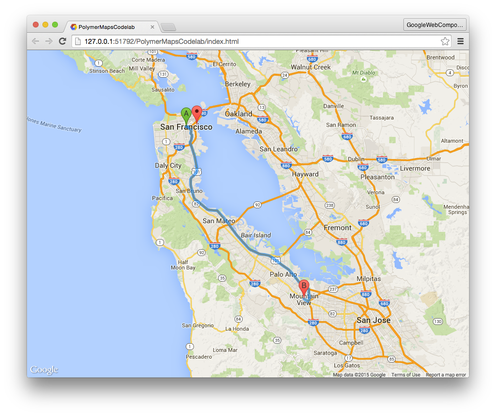

In this codelab, you'll create a fully working Google Maps app using elements in Polymer's Google Web Components collection. The app will be responsive and will include driving directions and transit mode. Along the way, you'll also learn about Polymer's data-binding features and iron element set.
What you'll learn
- How to use elements in Polymer's iron, paper, and Google Web Component sets.
- How to use Polymer's data binding features to reduce boilerplate code.
What you'll need
Set up your local development environment
- Install Git
- Install Node and npm (If you'd like to manage multiple version of Node, we recommend nvm)
- Install Bower & the Polymer CLI globally:
$ npm install -g bower polymer-cli
Clone the project & Install dependencies
- In your terminal, from the folder you hold your projects in, clone the Polymer Google Maps Codelab
$ git clone https://github.com/ComcastSamples/polymer-maps.git - Change into the directory you just cloned
$ cd polymer-maps - Install the dependencies for that project by running
$ bower install
When you run $ bower install, Bower will download and install a list of dependencies (including the Polymer core library) into the bower_components/ folder. Fetching the components may take some time if your Internet connection is slow.
Your folder structure should contain these files (among a few others):
polymer-maps/
bower_components/ <!-- installed dependencies from Bower -->
bower.json <!-- Bower metadata files used for managing deps -->
index.html <!-- your app -->
main.js
styles.css
Preview the app
Using the Polymer CLI we installed earlier, start up a local dev server with
$ polymer serveOnce that command prints out the folllowing, your server is running:
info: Files in this directory are available under the following URLs
applications: http://127.0.0.1:8081
reusable components: http://127.0.0.1:8081/components/polymer-maps/
Once the server is running, navigate to http://127.0.0.1:8081 to view your app. This is a great way to preview changes as you make them.
Next up
At this point the app doesn't do much. Let's add a map!
The Google Web Components collection provides the <google-map> element for declaratively rendering a Google Map. To use it, you first need to install it using Bower.
Install the google-map element
You can verify that <google-map> (and any dependencies) was installed by checking that bower_components/google-map/ was created and populated.
Obtain a Maps API key
To use the map element, you'll need to obtain an API key for the Google Maps API. Visit https://developers.google.com/maps/documentation/javascript/get-api-key and copy your key. We'll use it in the next step.
Use the google-map element
To employ <google-map>, you need to:
- Use an HTML Import to load it in
index.html. - Declare an instance of the element on the page.
In index.html, replace the <!-- HTML Imports go here. Format: <link rel="import" href=""> --> HTML comment in the <head> and replace it with a single import that loads google-map.html:
index.html
<head>
....
<script src="bower_components/webcomponentsjs/webcomponents-loader.js"></script>
<link rel="import" href="bower_components/google-map/google-map.html">
<link rel="stylesheet" href="styles.css">
</head>Next, replace the contents of <body> with an instance of <google-map>:
index.html
<body>
<google-map latitude="37.779" longitude="-122.3892" zoom="13"
api-key="YOUR_KEY"></google-map>
</body>As you can see, using <google-map> is completely declarative! The map is centered using the latitude and longitude attributes and its zoom level is set by the zoom attribute. We've also specified our API key for the Maps API using the api-key attribute.
Style the map
If you run the app right now, nothing will display. In order for the map to properly display itself, you need to set its container (in this case, <body>) to have a fixed height.
Open styles.css and replace its contents with default styling:
styles.css
body, html {
font-family: 'Roboto', Arial, sans-serif;
height: 100%;
margin: 0;
}Add a marker
<google-map> supports adding map markers to the map by declaring <google-map-marker> elements as children. The marker locations are also set using latitude and longitude attributes.
Back in index.html, add a draggable <google-map-marker> to the map:
index.html
<google-map latitude="37.779" longitude="-122.3892"
api-key="YOUR_KEY" zoom="13" disable-default-ui>
<google-map-marker latitude="37.779" longitude="-122.3892"
title="Go Giants!" draggable="true"></google-map-marker>
</google-map>Notice that we've also disabled the map's controls by setting disableDefaultUi to true. Since it's a boolean property, its presence as an HTML attribute makes it truthy.
Run the app
If you haven't already done so, navigate to http://127.0.0.1:8081/. At this point, you should see a map that takes up the entire viewport and has a single marker pin.
Frequently Asked Questions
Next up
We'll add driving directions!
The <google-map-directions> element was installed alongside <google-map>. It provides driving direction information using the Google Maps API.
Use the google-map-directions element
To employ <google-map-directions>:
- Use an HTML Import to load it in
index.html. - Declare an instance of the element on the page.
- "Connect" it to the map.
In index.html, add an HTML Import for google-map-directions.html:
index.html
<head>
....
<script src="bower_components/webcomponentsjs/webcomponents-loader.js"></script>
<link rel="import" href="bower_components/google-map/google-map.html">
<link rel="import" href="bower_components/google-map/google-map-directions.html">
</head>Declare <google-map-directions> as a sibling of <google-map>. Set its start-address attribute to "San Francisco" and the end-address to "Mountain View".
index.html
<body>
<google-map latitude="37.779" longitude="-122.3892"
api-key="YOUR_KEY" zoom="13" disable-default-ui>
...
</google-map>
<google-map-directions
start-address="San Francisco"
end-address="Mountain View"
api-key="YOUR_KEY"></google-map-directions>
</body>Hooking up directions to the map
<google-map-directions> fetches directions, but it isn't that useful by itself. You need to connect the results from <google-map-directions> to <google-map> so the directions render on the map.
Both elements expose a .map property that allow users to access/set an underlying Map object (used by the Google Maps JavaScript API). To get these two elements talking, set them to use the same Map object.
At the bottom of index.html, set the directions element to share the map:
index.html
...
<script>
var gMap = document.querySelector('google-map');
gMap.addEventListener('api-load', function(e) {
document.querySelector('google-map-directions').map = this.map;
});
</script>
</body>Note: Waiting until the map element fires its api-load event ensures that the map has been loaded.
Run the app
- Make sure your server is running. If not, run
$ polymer serve. - Navigate to http://127.0.0.1:8081/.
At this point, you should see the map, a marker, and added driving directions between San Francisco and Mountain View.

Next up
Learn Polymer's data-binding features and allow users to input their own start and end addresses.
Let's add input fields to allow users to input the start and end addresses. Polymer provides several elements for working with input: paper-card, paper-item, paper-input, iron-icon, and iron-icons.
In index.html, add new HTML Imports for these components:
index.html
<head>
....
<link rel="import" href="bower_components/iron-icon/iron-icon.html">
<link rel="import" href="bower_components/iron-icons/iron-icons.html">
<link rel="import" href="bower_components/paper-item/paper-item.html">
<link rel="import" href="bower_components/paper-item/paper-icon-item.html">
<link rel="import" href="bower_components/paper-input/paper-input.html">
<link rel="import" href="bower_components/paper-card/paper-card.html">
</head>At the bottom of the page, declare two <paper-icon-item> elements and a material design input for the start and end addresses. <paper-icon-item> is a convenience element for making an item with an icon.
<paper-icon-item>
<paper-input label="Start address" value="San Francisco"></paper-input>
</paper-icon-item>
<paper-icon-item>
<paper-input label="End address" value="Mountain View"></paper-input>
</paper-icon-item>Add search icons
<iron-icon> is an element useful for displaying an icon. It takes an icon attribute, which references an icon from Polymer's default icon sets.
- Inside each item add an
<iron-icon>element. - Set the
iconattribute toicon="search".
<paper-icon-item>
<iron-icon icon="search" slot="item-icon"></iron-icon>
<paper-input label="Start address" value="San Francisco"></paper-input>
</paper-icon-item>
<paper-icon-item>
<iron-icon icon="search" slot="item-icon"></iron-icon>
<paper-input label="End address" value="Mountain View"></paper-input>
</paper-icon-item>Add a material design card
Wrapping our inputs in a material design <paper-card> is a great way to highlight this part of the app.
<paper-card elevation="2"> <!-- elevation controls the amount of box shadow -->
<paper-icon-item>
...
</paper-icon-item>
<paper-icon-item>
...
</paper-icon-item>
</paper-card>In styles.css, add default styling to the card so it displays in the lower left corner, above the map.
styles.css
paper-card {
position: absolute;
bottom: 25px;
left: 25px;
z-index: 1;
}Next up
Use Polymer's data binding features to drive the driving directions from the address inputs.
In the last step, we created search inputs for the driving directions. In this step of the codelab, we'll hook them up to power <google-map-directions>.
Use data-binding outside of Polymer
Polymer's data-binding features are only available when creating a <dom-module> inside a template managed by Polymer.
To use Polymer bindings for elements placed in the main document, use the <dom-bind> element.
Essentially, it allows you to use Polymer sugaring features outside of Polymer. For example, it allows you to use {{}} bindings with elements in your main page.
Properties defined on an <dom-bind> can be data bound. For example:
<dom-bind id="t">
<template>
<!-- Hello, Eric. How are you today? -->
Hello, <span>{{name}}</span>. <span>{{greeting}}</span>
</template>
</dom-bind>
<script>
var t = document.querySelector('#t');
t.name = 'Eric';
t.greeting = 'How are you today?';
</script>Would bind the name and greeting properties to the values assigned on the template.
Data-bind the map ↔ directions element
In the last step, you wrote JavaScript to set the direction's map property:
document.querySelector('google-map-directions').map = this.map;
Both the maps and directions elements declare a map property in their properties object. This means you can use an attribute of the same name to data-bind the the two properties together.
- In index.html, remove the
<script>you added in Step 4. - Wrap the existing markup in
<body>inside a<dom-bind><template>...</template></dom-bind>. - Bind the
mapattribute of<google-map>to themapattribute of<google-map-directions>. Make sure this is done inside<dom-bind><template>...</template></dom-bind>. This will bind the elements'mapproperties together. When one changes, the other will too.
<dom-bind>
<template>
<google-map map="{{map}}" ...></google-map>
<google-map-directions map="{{map}}"...></google-map-directions>
</template>
</dom-bind>Note: We've used {{map}} as the binding property name, but you can use whatever name you like (for example, map="{{foo}}").
Data-bind the address inputs ↔ directions element
Right now, the startAddress and endAddress properties are hardcoded to "San Francisco" and "Mountain View", respectively.
<google-map-directions
start-address="San Francisco" end-address="Mountain View"
api-key="YOUR_KEY">
</google-map-directions>
Likewise, the address inputs are hardcoded:
<paper-input label="Start address" value="San Francisco"></paper-input>
<paper-input label="End address" value="Mountain View"></paper-input>We can make things more dynamic by binding these inputs to the attributes of the <google-map-directions>.
Bind the startAddress and endAddress to the value of the appropriate input:
index.html
<dom-bind>
<template>
<google-map map="{{map}}" latitude="37.779" longitude="-122.3892"
api-key="YOUR_KEY" disable-default-ui zoom="13">
<google-map-marker latitude="37.779" longitude="-122.3892"
title="Go Giants!" draggable="true"></google-map-marker>
</google-map>
<google-map-directions map="{{map}}"
start-address="{{start}}"
end-address="{{end}}"
api-key="YOUR_KEY"></google-map-directions>
<paper-card elevation="2">
<paper-icon-item>
<iron-icon icon="search" slot="item-icon"></iron-icon>
<paper-input label="Start address"
value="{{start}}"></paper-input>
</paper-icon-item>
<paper-icon-item>
<iron-icon icon="search" slot="item-icon"></iron-icon>
<paper-input label="End address"
value="{{end}}"></paper-input>
</paper-icon-item>
</paper-card>
</template>
</dom-bind>The name you use in each {{}} doesn't matter, as long as the binding names match for each pair of properties you want to bind together.
Also note we've wrapped all of the elements in a single <dom-bind><template>...</template></dom-bind>.
Run the app
- Make sure your server is running. If not, run
$ polymer serve. - Navigate to http://127.0.0.1:8081/.
- Enter California for the start address.
- Enter NYC for the end address.
You should see the map update itself with driving directions from California to New York:

Try entering other destinations! You should see the map update as new destinations are entered.
Next up
Allow users to select the type of directions (walking, transit, driving).
Import the components for this step
In index.html, add the following HTML Imports to the <head>:
index.html
<head>
....
<link rel="import" href="bower_components/iron-icons/maps-icons.html">
<link rel="import" href="bower_components/paper-tabs/paper-tabs.html">
</head>Note: maps-icons is required to load Polymer's map iconset. You'll use it later to render icons for the travel modes.
Creating a travel mode selector
We'll use <paper-tabs> to allow users to select their travel type. Each transit mode will also use an icon from the maps icon set instead of the default one. To use one of the other icon sets, the icon attribute takes the form: <iconset>:<name>, where <iconset> is the name of the icon set (e.g. "maps") and <name> is the name of the icon from that set.
As an example, the following code places the directions-car icon from the maps icon set:
<iron-icon icon="maps:directions-car" item-icon></iron-icon>The <google-map-directions> element contains a travelMode property for specifying
the type of directions to render. It has four possible values: "DRIVING", "WALKING", "BICYCLING", and "TRANSIT".
- In index.html within the
<paper-card>container, add a<paper-tabs>with the travel mode options. - For each type of transit mode, add an
<iron-icon>and<span>containing helper text.
index.html
<paper-card elevation="2">
...
<!-- selected="0" selects the first item in the tab list.
Change it to another index if you want a different default. -->
<paper-tabs selected="0">
<paper-tab>
<iron-icon icon="maps:directions-car"></iron-icon>
<span>DRIVING</span>
</paper-tab>
<paper-tab>
<iron-icon icon="maps:directions-walk"></iron-icon>
<span>WALKING</span>
</paper-tab>
<paper-tab>
<iron-icon icon="maps:directions-bike"></iron-icon>
<span>BICYCLING</span>
</paper-tab>
<paper-tab>
<iron-icon icon="maps:directions-transit"></iron-icon>
<span>TRANSIT</span>
</paper-tab>
</paper-tabs>
</paper-card>Styling the tab strip
<paper-tabs> is styled by default. It has a yellow material design ink effect and selection bar indication the selected tab. We can make it nicer!
Polymer uses CSS custom properties to expose styling hooks for internal parts of a component's Shady DOM. For example, paper-tabs exposes --paper-tabs-selection-bar-color to colorize the tab's selection bar.
CSS custom properties are coming natively to browsers. Until they do, Polymer provides <custom-style>, a custom element that wraps the <style> tag and teaches it the custom properties styling system. To use this element, define it in the <head> of your main page:
index.html
<head>
...
<custom-style>
<style>
paper-tabs {
--paper-tabs-selection-bar-color: #0D47A1;
margin-top: 16px;
}
paper-tab {
--paper-tab-ink: #BBDEFB;
}
/* Other styles that make things more pleasant.
These could instead be added in styles.css since they
do not use any Polymer styling features. */
paper-tab iron-icon {
margin-right: 10px;
}
paper-tab.iron-selected {
background: rgb(66, 133, 244);
color: white;
}
</style>
</custom-style>
</head>This bit of code will colorize the selection bar and ink ripple effect a nice material design blue.
Data-bind the travel mode selector ↔ directions element
The last thing you need to do is data-bind the travelMode property of <google-map-directions> to <paper-tabs>'s .selected property. The tabs updates this property whenever a new child item is selected. By default, its set to the index of the selected item. We need to override this in order to bind to the string value of each direction type. The attr-for-selected property does just that.
Bind the direction's travelMode property to the tab's selected property:
index.html
<google-map-directions map="{{map}}" api-key="YOUR_KEY"
start-address="{{start}}"
end-address="{{end}}"
travel-mode="[[travelMode]]"></google-map-directions>
...
<paper-card>
<paper-tabs selected="{{travelMode}}" attr-for-selected="label">
<paper-tab label="DRIVING">
<iron-icon icon="maps:directions-car"></iron-icon>
<span>DRIVING</span>
</paper-tab>
<paper-tab label="WALKING">
<iron-icon icon="maps:directions-walk"></iron-icon>
<span>WALKING</span>
</paper-tab>
<paper-tab label="BICYCLING">
<iron-icon icon="maps:directions-bike"></iron-icon>
<span>BICYCLING</span>
</paper-tab>
<paper-tab label="TRANSIT">
<iron-icon icon="maps:directions-transit"></iron-icon>
<span>TRANSIT</span>
</paper-tab>
</paper-tabs>
</paper-card>Run the app
- Make sure your server is running. If not, run
$ polymer serve. - Navigate to http://127.0.0.1:8081/.
- Enter San Fran for the start address.
- Enter Oakland, CA for an end address.
- Click the different modes of travel.
The map should automatically update to show different forms of travel:
You built an entire maps application complete with driving directions, and all without writing a single line of code!
Think about that for a second. This just goes to show you the power of web components. They're reusable and composable. Zest in Polymer's data-binding features and you can create an entire app using nothing but declarative markup.
What you've learned
- How to use elements in Polymer's iron, paper, and Google Web Component sets.
- How to use Polymer's styling system and CSS custom properties to style the internal styling hooks a component specifies.
- How to use Polymer's data binding features to reduce boilerplate code.
Learn More
Polymer
- polymer-project.org
- Iron elements documentation
- Paper elements documentation
- Polymer tag on Stack Overflow
Other
- Google Web Components documentation
- webcomponents.org